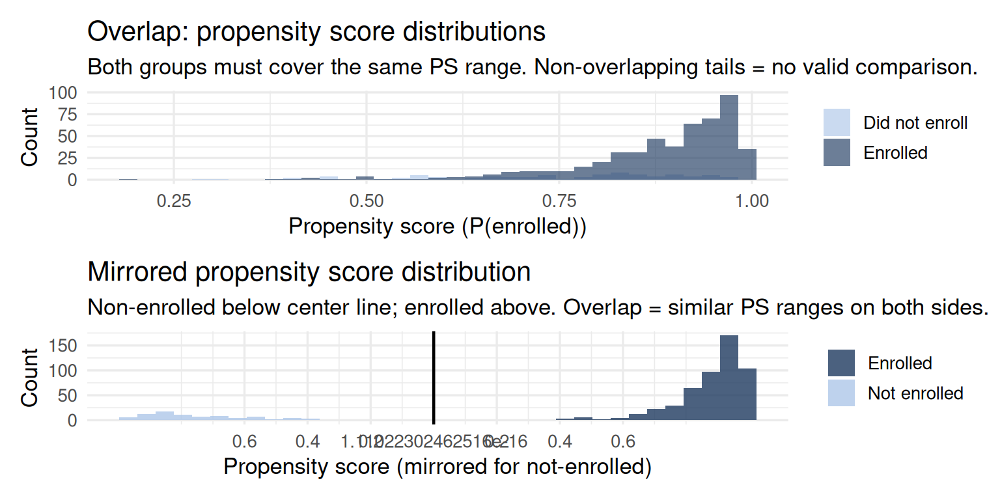

flowchart TD
A["All platform households\nN = 2,000"] --> B["Eligible for program\n(active accounts)\nN = 1,400"]
B --> C["Aware of program\n(received notification)\nN = 900"]
C --> D["Enrolled\n(treated)\nN = 180"]
C --> E["Did not enroll\n(control pool)\nN = 720"]
style D fill:#e8f5e9,stroke:#2d6a4f
style E fill:#f0f0f0,stroke:#888888
Propensity Scores & Matching
Propensity Scores & Matching
The Problem PSM Solves
You want to estimate whether enrolling in a digital budgeting program increases household savings, using observational data from a financial services platform. Households self-selected into the program — financially motivated, more tech-comfortable, higher-income households are more likely to enroll. A naive comparison of enrollees vs. non-enrollees will overestimate the program’s benefit.
Propensity score methods reduce this bias by constructing a comparison group similar to the treated group on all observed confounders. They work by estimating the probability that each household enrolled — the propensity score — then matching or weighting on that score.
\[e(X) = P(\text{Enrolled} = 1 \mid X)\]
Key result (Rosenbaum & Rubin, 1983): conditioning on \(e(X)\) is equivalent to conditioning on all elements of \(X\) — you do not need to match on every covariate separately.
The selection funnel
At each stage, who disappears is not random. Financially savvy households stay eligible; engaged households see the notification; motivated households enroll. The enrolled group is the product of multiple successive selection filters — and the naive comparison confounds all of those filters with the program effect itself.
Part A: Propensity Scores in Observational Data
Simulation: Digital Budgeting Program
Code
n <- 600
financial_literacy <- rnorm(n, 50, 12)
income_percentile <- rnorm(n, 50, 15)
baseline_savings <- rnorm(n, 40, 10)
# Enrollment probability driven by observed confounders
p_enroll <- plogis(-4 + 0.06 * financial_literacy + 0.04 * income_percentile
+ 0.03 * baseline_savings)
enrolled <- rbinom(n, 1, p_enroll)
# True ATE = 8 (program increases monthly savings by 8 units)
savings_change <- 0.2 * financial_literacy + 0.15 * income_percentile
+ 8 * enrolled + rnorm(n, 0, 7) [1] 3.89142996 14.48883012 7.54215908 1.44021769 3.56298396
[6] 3.97343000 9.31754729 11.77759182 5.05381151 5.62373408
[11] 11.62656272 1.91428665 6.87530360 7.00168249 2.64352323
[16] 3.38139600 -2.15183808 -6.17349215 7.33258389 -0.93178561
[21] 10.62909489 4.71538739 13.59253243 10.98401739 4.41507591
[26] 5.56739124 4.26574922 13.14825023 11.33695992 10.29800037
[31] -12.46887233 8.83577495 -1.92806760 8.53224064 3.37416730
[36] 7.26145768 -0.26060121 6.84948569 18.63608542 20.77615555
[41] -9.42047895 -3.58025575 -1.94598697 -0.93407596 22.55370560
[46] 15.10875214 7.23271029 14.87063217 23.82943045 12.45962947
[51] 20.42875580 -0.03251083 0.44474184 7.47564901 14.24227234
[56] 14.09067557 11.40033725 -3.29765585 14.64740996 20.93409314
[61] 16.68285200 -1.66569953 11.32273814 8.08642451 8.60969956
[66] 6.72342264 -0.85969186 10.31898739 17.46210042 19.45596015
[71] 11.35952560 2.84578862 3.91888366 -4.28002387 12.22345031
[76] 6.34965662 28.32951264 6.12196104 9.03664994 -1.44756488
[81] 3.50207903 13.93300277 4.30699512 0.01659530 6.02683837
[86] -11.79932257 12.55651221 9.10431420 2.02594084 17.54170060
[91] -0.84027320 -4.44562582 3.19156248 -0.29034866 13.52774111
[96] 8.60174640 5.40956990 0.06535457 1.34258286 1.27202398
[101] 9.33237891 7.49782861 7.98003803 0.24246727 14.54634237
[106] -2.40087616 15.59979329 19.36894656 3.63835238 -1.46420046
[111] 10.98286679 -3.64231310 6.11039465 13.53553672 5.88426047
[116] 8.23078639 6.33285372 9.84486600 -3.14249622 -2.63364548
[121] 12.68769005 -4.16669778 19.40377806 11.69673809 -2.52310931
[126] 23.66331823 7.71860268 13.25887732 8.17363255 11.87397782
[131] 3.97954338 1.50164095 -6.00297809 3.64551913 13.09001897
[136] 0.28471688 -0.11623940 4.92766052 9.11393945 4.53779520
[141] 16.48657492 10.04842698 -0.25229723 -7.71831272 1.45051799
[146] 11.22586129 5.67345576 15.74314288 -3.43585523 10.34634960
[151] -3.67260211 10.24359753 10.99024629 0.82409126 -1.15640825
[156] 9.60721321 5.85085106 7.41316830 6.83987712 12.58508791
[161] 0.47615690 32.29636722 10.05856625 4.24538308 6.98658553
[166] 3.79491369 12.43922635 -4.42399248 -6.46295119 7.37065163
[171] 5.85761525 9.16368583 15.17867901 10.82231921 10.88114484
[176] 19.76130780 0.56524699 2.46135045 10.71958592 9.77798950
[181] -7.31017805 11.76460303 -1.02920488 -0.57880779 12.08979487
[186] 8.12250462 2.76286891 19.66670627 4.29211803 15.20053845
[191] 17.63702594 17.31702071 16.78259165 -2.01134188 4.17285137
[196] 16.77749230 7.49793957 3.22294365 0.82502479 17.11104470
[201] 13.30642578 18.35730035 3.66306316 9.81781059 -7.60564647
[206] 8.60356494 -5.92341714 2.72234105 7.73654929 18.11921154
[211] 2.22057137 5.17213656 -4.18166131 4.83025105 3.89738745
[216] 16.03543331 11.20154282 3.88535547 9.59540458 8.93903419
[221] 10.30529440 -2.08258550 16.29491581 17.16674771 -0.19318686
[226] 14.97283206 2.77102088 9.55307360 15.00661662 11.45900281
[231] 7.94088908 8.67295890 23.75493667 18.05644284 8.07285425
[236] -2.24554324 20.89172407 8.62947308 10.81954973 9.16575593
[241] 3.70722044 4.95163941 5.32525741 9.19929723 -8.91593724
[246] 5.07279994 12.95036895 10.18265275 10.45448110 -3.10805789
[251] 1.51565158 7.19675110 8.14236686 14.24953183 18.13658903
[256] -1.76421610 3.81770105 6.26581412 13.42056158 7.16988956
[261] 5.07693110 7.63301553 17.47765142 -6.44455999 5.82460038
[266] 0.60937922 23.67120979 4.68856502 6.34237860 8.26541852
[271] 6.77246402 5.46873682 2.37464921 9.39103446 12.38151458
[276] 8.21791496 0.33560655 4.59510154 14.67165578 1.03840656
[281] 3.99690774 5.48221227 10.66956495 3.79959278 19.56830584
[286] -0.33536855 17.90974216 5.69920972 -6.68299734 10.24115558
[291] 13.60717584 2.45823542 7.92533616 -3.36462558 1.64703064
[296] 8.95736706 9.89831570 7.48437149 2.57898770 12.15671295
[301] 17.29253192 3.79414918 8.39554801 4.28246597 7.43370851
[306] 9.12528911 7.28501605 5.51675021 4.70140857 8.23830924
[311] 6.59495155 4.18885960 10.64153589 10.82609712 9.19165856
[316] 0.29244055 10.81728790 10.98071324 6.01809897 11.87542450
[321] 16.85049363 10.29461724 13.35574461 16.97801421 19.61220854
[326] 4.63489131 5.14515840 5.69756846 15.70753611 4.07202573
[331] 14.70445442 10.10995263 5.98077255 -2.19306112 -3.93256078
[336] 22.07854834 0.02772933 11.90755335 12.86145580 10.12424866
[341] 12.43428120 8.18459236 13.20012861 10.43112374 -4.40058448
[346] 14.70944348 1.15108945 7.75705869 1.55479329 16.03638605
[351] 5.27083923 -0.69484284 7.80423756 7.60107781 11.88961312
[356] 14.31346687 11.75636162 -2.29830297 -8.86551586 5.44487836
[361] 6.73112061 6.95655940 -9.74900286 3.24448529 -4.73382578
[366] 26.47287553 11.82625795 -0.04307757 -5.23097628 6.13251640
[371] 13.74301707 13.44735478 11.17864416 17.87036521 -4.67744874
[376] 0.28283781 7.86582490 9.04512604 4.27297691 16.38492288
[381] -6.29817038 -7.10017605 19.22742755 14.24645024 -10.62393893
[386] 13.76469793 10.55893574 -1.31645168 10.51703308 14.25096227
[391] 1.03430703 3.63770346 -0.65013414 11.70808812 1.11870795
[396] 5.36978161 0.70785231 12.88367150 6.98885838 11.48980378
[401] 12.32135697 -0.03178799 7.36120548 10.79971562 12.12231160
[406] 7.88185372 10.93092927 13.60509575 12.75925173 9.16764746
[411] -5.23850135 10.41435134 9.08333860 2.63490788 2.72959470
[416] 11.66989473 5.51202291 -1.82186548 11.55045677 16.00243647
[421] 22.46772263 13.38906440 22.01398562 16.90134636 10.33464172
[426] 9.77850873 21.51639990 0.90949093 8.45111108 9.34661724
[431] -8.38017124 -2.46236131 2.42613657 -19.80258741 2.57510893
[436] 6.00161154 11.09913282 13.02369791 17.96726560 -3.79773809
[441] 8.29210521 3.56939319 8.21069473 7.09599497 -0.23129500
[446] -4.64773566 22.84219607 -1.27083978 9.92515115 0.23795772
[451] 10.55418353 -4.37109146 -6.22014592 -0.53335971 8.35196956
[456] 4.56430934 24.69541971 7.96928311 17.32183249 13.74566068
[461] 12.79975321 11.61116664 9.91661293 3.00664864 -2.40130902
[466] 11.28285673 -9.33082761 -4.98808902 -2.94355543 -5.06226297
[471] 8.79453291 3.29013074 14.19215912 15.79526995 11.96795301
[476] 3.82215990 1.67889824 8.23894741 -5.65663854 23.59342626
[481] 2.45233110 19.88096373 14.57247365 14.24706471 13.12138471
[486] 5.06106862 5.83179545 -1.52473532 15.26400017 8.32352479
[491] 7.59558651 8.53717349 3.56451185 5.03610577 13.43683705
[496] 17.17635066 8.40810914 1.71778850 9.62627303 9.32143130
[501] 6.30728878 12.00495422 4.94054258 9.43429723 11.86472366
[506] 4.01790083 9.34902429 4.34943055 -0.75050928 7.13146856
[511] 4.74484707 12.01385434 9.78455257 26.70500941 7.05853488
[516] 8.78101843 -7.07001881 14.21515861 5.84947709 8.93215495
[521] 14.61728459 18.67980711 6.26784602 5.50377409 9.45577885
[526] 16.46477343 0.81591221 1.34446335 13.50631277 13.17888483
[531] 7.60684422 -5.66965110 -8.27698779 -8.26474935 10.63886771
[536] -1.49753728 6.39974210 10.96279595 21.58635782 6.31286456
[541] 7.85320600 9.64952939 3.83258629 -14.39690904 18.57894930
[546] 5.59489098 2.98149619 10.01536403 3.67769071 14.44117185
[551] -3.17870466 13.99032927 6.36520014 1.15139965 13.16051174
[556] 25.09122537 1.05255144 4.91484699 -0.18571273 11.14391593
[561] 8.89092302 -8.28969059 -7.37742442 14.57415685 10.09413509
[566] -13.92948685 -0.42894360 10.78842017 8.31329610 -5.06312569
[571] 13.26765987 5.02020938 16.70919221 3.15244495 16.27965238
[576] -5.74784678 13.22629008 15.35926623 11.66919760 0.19091004
[581] 7.66563645 -5.41920259 3.99788834 -5.23737644 10.41625269
[586] 23.14765773 10.35652440 5.07495212 14.46583714 5.36736615
[591] 9.74123704 3.39947376 12.08186918 12.83478007 10.04305276
[596] 21.46151917 24.14290824 1.07563313 10.80999186 -0.62671721Code
df_ps <- tibble(financial_literacy, income_percentile, baseline_savings,
enrolled, savings_change)
m_naive <- lm(savings_change ~ enrolled, data = df_ps)
cat("Naive estimate:", round(coef(m_naive)["enrolled"], 2),
" | True effect = 8\n")Naive estimate: 2.81 | True effect = 8The naive estimate is substantially inflated because it conflates financial literacy and income with the program effect — financially literate, higher-income households save more regardless of the program.
Step 1: Estimate Propensity Scores and Check Overlap
Code
ps_model <- glm(enrolled ~ financial_literacy + income_percentile + baseline_savings,
family = binomial, data = df_ps)
df_ps <- df_ps |> mutate(ps = fitted(ps_model))The overlap plot is the most important diagnostic before any matching or weighting. If the two distributions do not overlap, there are no valid comparison units for some treated households — causal inference is impossible for them.
Code
p_hist <- ggplot(df_ps, aes(x = ps, fill = factor(enrolled))) +
geom_histogram(alpha = 0.65, bins = 35, position = "identity") +
scale_fill_manual(values = c("#aec6e8", "#1e3a5f"),
labels = c("Did not enroll", "Enrolled"),
name = NULL) +
labs(
title = "Overlap: propensity score distributions",
subtitle = "Both groups must cover the same PS range. Non-overlapping tails = no valid comparison.",
x = "Propensity score (P(enrolled))",
y = "Count"
) +
theme_minimal(base_size = 13)
# Mirrored version for cleaner comparison
p_mirror <- df_ps |>
mutate(group = ifelse(enrolled == 1, "Enrolled", "Not enrolled"),
ps_plot = ifelse(enrolled == 0, -ps, ps)) |>
ggplot(aes(x = ps_plot, fill = group)) +
geom_histogram(bins = 35, alpha = 0.8) +
scale_fill_manual(values = c("Enrolled" = "#1e3a5f", "Not enrolled" = "#aec6e8"),
name = NULL) +
scale_x_continuous(
breaks = seq(-0.6, 0.6, 0.2),
labels = abs(seq(-0.6, 0.6, 0.2))
) +
geom_vline(xintercept = 0, color = "black", linewidth = 0.8) +
labs(
title = "Mirrored propensity score distribution",
subtitle = "Non-enrolled below center line; enrolled above. Overlap = similar PS ranges on both sides.",
x = "Propensity score (mirrored for not-enrolled)",
y = "Count"
) +
theme_minimal(base_size = 13)
p_hist / p_mirror
Step 2: Matching and Balance Check
Code
m_out <- matchit(enrolled ~ financial_literacy + income_percentile + baseline_savings,
data = df_ps,
method = "nearest",
ratio = 1)
summary(m_out)$sum.matched |>
knitr::kable(digits = 3,
caption = "Balance after nearest-neighbor matching. Standardized mean differences should be < 0.10 after matching.")| Means Treated | Means Control | Std. Mean Diff. | Var. Ratio | eCDF Mean | eCDF Max | Std. Pair Dist. | |
|---|---|---|---|---|---|---|---|
| distance | 0.981 | 0.740 | 2.147 | 0.002 | 0.667 | 1.000 | 2.147 |
| financial_literacy | 65.996 | 41.081 | 2.170 | 0.504 | 0.588 | 0.881 | 2.170 |
| income_percentile | 56.812 | 44.866 | 0.788 | 1.000 | 0.209 | 0.310 | 1.271 |
| baseline_savings | 45.822 | 37.383 | 0.857 | 0.829 | 0.245 | 0.393 | 1.273 |
The balance table shows how much the treated and matched-control groups differ on each covariate before and after matching. The goal is to reduce all standardized mean differences below 0.10 — indicating that matched groups are comparable on observed confounders.
Step 3: PSM Treatment Effect Estimate
Code
matched_data <- match.data(m_out)
m_psm <- lm(savings_change ~ enrolled + financial_literacy + income_percentile + baseline_savings,
data = matched_data,
weights = weights)
tidy(m_psm) |> filter(term == "enrolled") |>
knitr::kable(digits = 3,
caption = "PSM estimate of ATT (true ATE = 8)")| term | estimate | std.error | statistic | p.value |
|---|---|---|---|---|
| enrolled | 0 | 0 | 0 | 1 |
Inverse Probability Weighting (IPW)
PSM discards unmatched households, losing information. IPW retains all observations by reweighting so the weighted sample resembles a random draw from the full population:
\[w_i = \frac{D_i}{\hat{e}(X_i)} + \frac{1-D_i}{1-\hat{e}(X_i)}\]
Enrolled households with a low enrollment probability are upweighted (they are surprising enrollees — useful controls for the counterfactual). Non-enrolled households with a high enrollment probability are upweighted (they are surprising non-enrollees — useful controls for what would happen without the program).
Code
df_ps <- df_ps |>
mutate(
ipw = ifelse(enrolled == 1,
1 / fitted(ps_model),
1 / (1 - fitted(ps_model)))
)
m_ipw <- lm(savings_change ~ enrolled + financial_literacy + income_percentile + baseline_savings,
data = df_ps,
weights = ipw)
tidy(m_ipw) |> filter(term == "enrolled") |>
knitr::kable(digits = 3,
caption = "IPW estimate (true effect = 8)")| term | estimate | std.error | statistic | p.value |
|---|---|---|---|---|
| enrolled | 0 | 0 | -0.556 | 0.579 |
Doubly Robust Estimation
Doubly robust estimation combines a propensity score model with an outcome regression. The estimate is consistent if either model is correctly specified — providing extra protection against one of the two models being wrong.
Code
m_dr <- lm(savings_change ~ enrolled + financial_literacy + income_percentile + baseline_savings,
data = df_ps,
weights = ipw)
bind_rows(
tidy(m_naive) |> filter(term == "enrolled") |> mutate(method = "Naive OLS"),
tidy(m_psm) |> filter(term == "enrolled") |> mutate(method = "PSM (ATT)"),
tidy(m_ipw) |> filter(term == "enrolled") |> mutate(method = "IPW (ATE)"),
tidy(m_dr) |> filter(term == "enrolled") |> mutate(method = "Doubly Robust")
) |>
select(method, estimate, std.error, p.value) |>
knitr::kable(digits = 3,
caption = "Comparison: naive vs. PSM vs. IPW vs. doubly robust (true = 8). All three PS-based approaches recover close to the true effect; naive OLS is inflated.")| method | estimate | std.error | p.value |
|---|---|---|---|
| Naive OLS | 2.814 | 0.363 | 0.000 |
| PSM (ATT) | 0.000 | 0.000 | 1.000 |
| IPW (ATE) | 0.000 | 0.000 | 0.579 |
| Doubly Robust | 0.000 | 0.000 | 0.579 |
Rosenbaum Sensitivity Analysis
After matching, the critical question is: how large would an unmeasured confounder need to be to overturn the conclusion? The sensitivity parameter \(\Gamma\) quantifies this:
- \(\Gamma = 1\): no hidden bias assumed.
- \(\Gamma = 2\): an unmeasured confounder could double the odds of enrollment for otherwise-identical households.
A small \(\Gamma\) threshold at significance (say, \(\Gamma = 1.2\)) means the conclusion is fragile — even a modest omitted confounder overturns it. A large threshold (say, \(\Gamma = 3\)) means the conclusion survives substantial unmeasured confounding. The rbounds package implements Rosenbaum bounds for continuous and binary outcomes. Always report the \(\Gamma\) at which your p-value crosses 0.05.
Part B: Propensity Scores in Experimental Research
Random assignment guarantees unbiased intent-to-treat estimates at the point of randomization. But three situations arise in practice where PS methods are needed even within an experiment.
Context A: IPW for Non-Random Attrition
This is the most important experimental application. When participants drop out at follow-up and dropout is related to the outcome, the remaining sample is no longer a random subsample. High-debt households may disengage from a financial diary study precisely because their financial situation is worsening — excluding them from the analysis biases the control group’s follow-up average upward.
Code
n_att <- 200
treatment_att <- rep(c(0, 1), each = 100)
baseline_debt <- rnorm(n_att, 50, 10)
# High debt + control group → higher dropout
# (distressed households avoid follow-up measurement)
p_remain <- plogis(2.5 - 0.07 * baseline_debt + 0.8 * treatment_att)
remained <- rbinom(n_att, 1, p_remain)
# True treatment effect = +6 (financial coaching increases savings)
outcome_att <- 45 + 6 * treatment_att - 0.3 * baseline_debt + rnorm(n_att, 0, 6)
df_att <- tibble(treatment = treatment_att, baseline_debt, remained, outcome_att)
cat("Control retention: ", round(mean(remained[treatment_att == 0]) * 100, 1), "%\n")Control retention: 21 %Code
cat("Treatment retention:", round(mean(remained[treatment_att == 1]) * 100, 1), "%\n")Treatment retention: 50 %Code
ps_att <- glm(remained ~ baseline_debt + treatment, family = binomial, data = df_att)
df_att$ipw_att <- 1 / fitted(ps_att)
df_complete <- df_att |> filter(remained == 1)
m_naive_att <- lm(outcome_att ~ treatment, data = df_complete)
m_ipw_att <- lm(outcome_att ~ treatment, data = df_complete,
weights = df_att$ipw_att[df_att$remained == 1])
bind_rows(
tidy(m_naive_att) |> filter(term == "treatment") |> mutate(method = "Naive complete-case analysis"),
tidy(m_ipw_att) |> filter(term == "treatment") |> mutate(method = "IPW-corrected analysis")
) |>
select(method, estimate, std.error, p.value) |>
knitr::kable(digits = 3,
caption = "Attrition bias: naive vs. IPW-weighted (true effect = +6). High-debt control households drop out more, biasing the naive estimate downward. IPW is consistent under MAR.")| method | estimate | std.error | p.value |
|---|---|---|---|
| Naive complete-case analysis | 4.733 | 1.644 | 0.005 |
| IPW-corrected analysis | 4.182 | 1.328 | 0.002 |
Context B: PSM for Self-Selected Sub-Treatment Engagement
Random assignment gives households access to the coaching program, but actual engagement is voluntary. Comparing high-engagement to low-engagement households within the treatment arm is an observational comparison — highly engaged participants likely differ systematically in motivation, baseline financial literacy, and financial goals. PSM on pre-randomization covariates makes this comparison more credible.
Context C: Pre-Test Matching for Nonlinear Covariate Relationships
ANCOVA assumes a linear, homogeneous relationship between the pre-test and post-test. When this relationship is nonlinear — for instance, when very high or very low baseline savers change at a different rate — matching on the pre-test creates a comparison group that is directly comparable at baseline, allowing nonparametric change estimation without linear extrapolation.
Assumptions
What Propensity Score Methods Can and Cannot Do
Reviewer Challenge
TipWhat a Reviewer Would Ask
Challenge 1: “You matched on financial literacy and income — but motivation to save is the most obvious confounder and you have no measure of it.” This is the ignorability challenge. The appropriate response is: (1) acknowledge the limitation explicitly, (2) argue why the measured proxies (literacy, baseline savings) partially capture motivation, (3) conduct a sensitivity analysis showing how large an unmeasured confounder would need to be (\(\Gamma\) or E-value), and (4) discuss whether the residual confounding, if present, is likely to be large enough to materially change the conclusion.
Challenge 2: “Your pre-matching balance table shows a large SMD for baseline savings. Why is your matching not working?” Poor post-matching balance indicates either that the PS model is misspecified (wrong functional form, missing interactions) or that the matching ratio is too restrictive. Investigate the caliper setting, consider exact matching on the most influential covariate, or use entropy balancing which targets direct covariate balance rather than going through the PS.
Challenge 3: “Your overlap plot shows that enrolled households have PS mostly above 0.5, while non-enrolled are mostly below 0.2. Is the comparison credible?” This is a common support failure. Matches in the tails are between very different households — the comparisons are not credible there. The honest response is to trim to the common support region, show results on that restricted sample, and acknowledge that the ATT estimate applies only to enrolled households with close matches, not all enrolled households.
Reporting Checklist for PS Analyses
TipPS Reporting Checklist